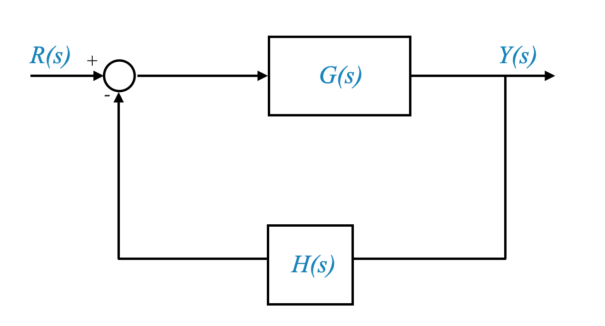
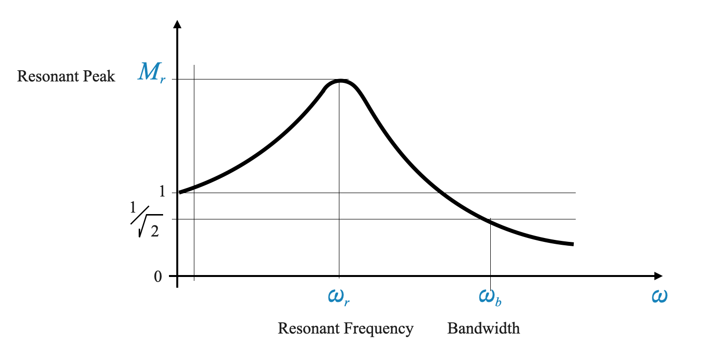
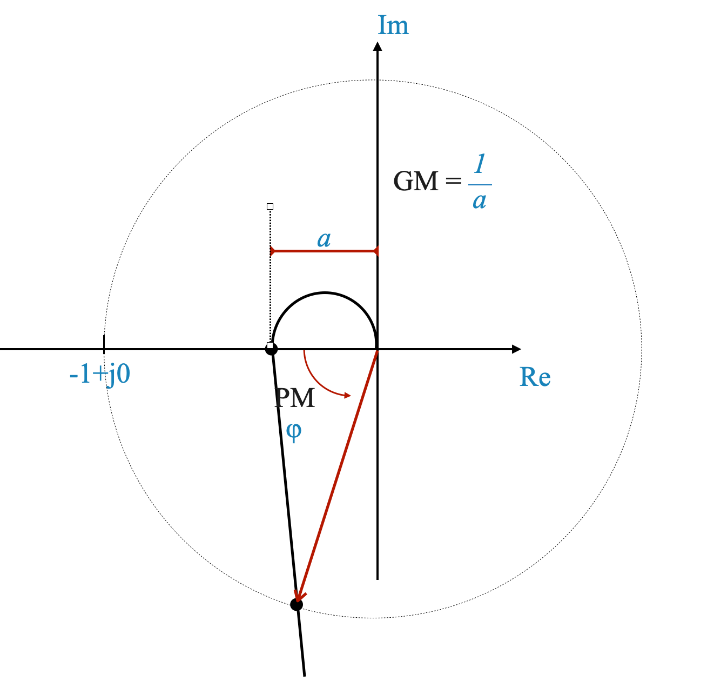
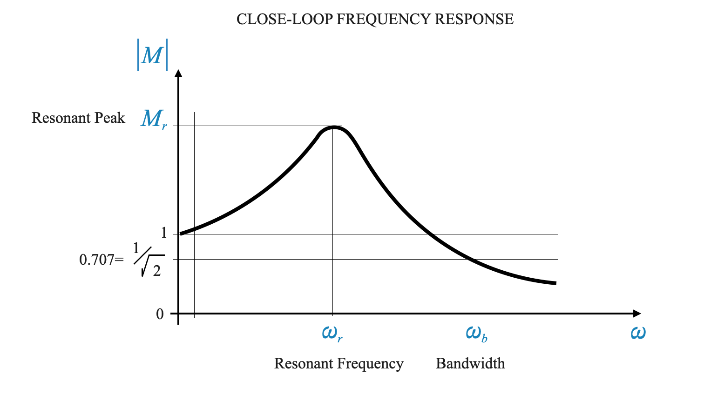
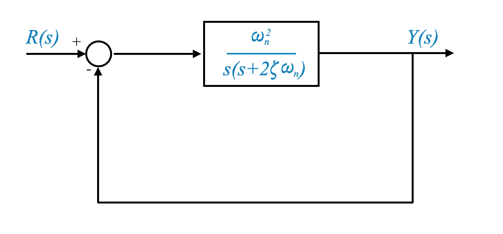
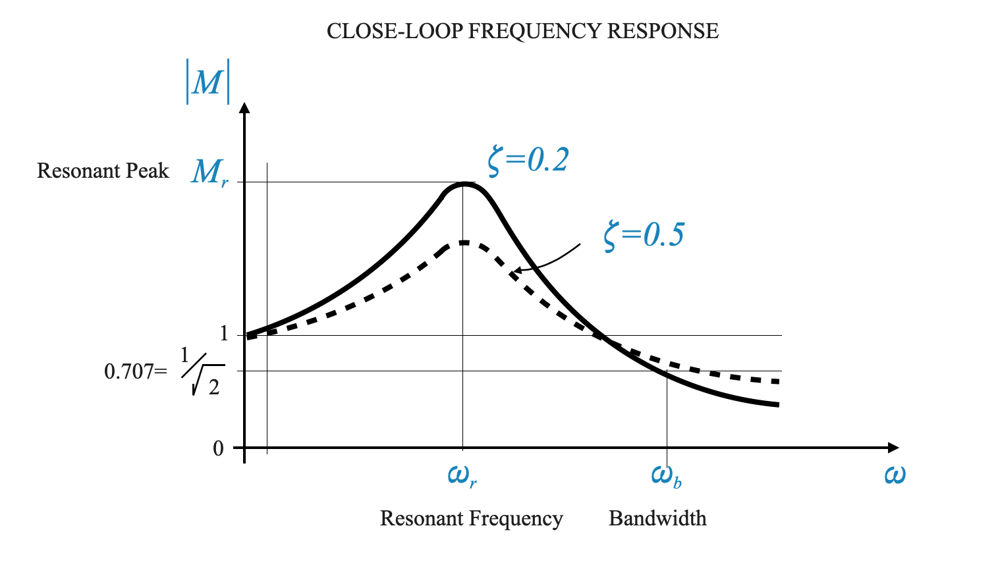

Prestazioni del sistema di feedback basate sulla risposta in frequenza
Nella nostra fase finale di discussione, approfondiremo gli aspetti di progettazione dei sistemi di controllo nel dominio della frequenza. Il nostro obiettivo è capire come un sistema può essere rappresentato e caratterizzato in questo dominio. Le prossime lezioni illustreranno gli algoritmi di progettazione essenziali per l’analisi nel dominio della frequenza.
Rappresentazione e caratterizzazione di un sistema nel dominio della frequenza
Per cominciare, è importante capire cosa intendiamo con “dominio della frequenza”. A differenza del dominio del tempo, in cui analizziamo i sistemi in base alla loro risposta nel tempo, il dominio della frequenza si concentra su come i sistemi rispondono a frequenze diverse. Ciò è importante nei sistemi di controllo, soprattutto per analizzare come si comportano i sistemi sotto vari ingressi sinusoidali.
Consideriamo un sistema di feedback con una funzione di trasferimento ad anello aperto nel percorso in avanti, indicata come \(G(s)\), e una funzione di trasferimento del sensore o del percorso di feedback, \(H(s)\). La funzione di trasferimento ad anello chiuso \(M(s)\) è data da:
\[ M(s) = \frac{G(s)}{1 + G(s)H(s)} \]

Per analizzare queste funzioni di trasferimento nel dominio della frequenza, sostituiamo la variabile di Laplace $ s $ con $ j$. Pertanto, la nostra funzione di trasferimento ad anello chiuso nel dominio della frequenza diventa:
Risposta in frequenza ad anello aperto: si riferisce al modo in cui il sistema, costituito dal sensore e dall’impianto, risponde a frequenze diverse quando non viene applicato alcun feedback. Essenzialmente, è il comportamento naturale del sistema in risposta agli input.
Per riassumere, la risposta in frequenza ad anello aperto, che include l’effetto combinato del sensore e della pianta (indicato come $ GH $), è un’informazione fondamentale. Può essere derivato da un modello teorico del sensore e dell’impianto o attraverso metodi sperimentali per misurare come il sistema risponde a varie frequenze in uno stato a circuito aperto.
Dall’anello aperto all’anello chiuso
Esploriamo un aspetto critico dei sistemi di controllo: determinare il comportamento a circuito chiuso dai dati di risposta in frequenza a circuito aperto. Questo compito, anche se apparentemente semplice, in realtà pone una questione complessa che necessita di un’attenta analisi.
Ecco il processo suddiviso:
Analisi del comportamento a circuito chiuso: il nostro obiettivo è capire come si comporta il sistema quando viene applicato il feedback. Questo è noto come comportamento a circuito chiuso.
Utilizzo dei dati a circuito aperto: iniziamo con ciò che sappiamo: la risposta in frequenza a circuito aperto. Questa è la risposta del sistema senza feedback, come discusso in precedenza.
Transizione all’anello chiuso: per analizzare il comportamento ad anello chiuso, applichiamo i dati della risposta in frequenza ad anello aperto nella formula della funzione di trasferimento ad anello chiuso. Si tratta di un approccio matematico che integra i dati a circuito aperto in un quadro che considera il feedback.
Comprensione del risultato: applicando i dati ad anello aperto alla formula ad anello chiuso, possiamo calcolare aspetti importanti come l’ampiezza e l’angolo di fase della funzione di trasferimento ad anello chiuso, indicata come $ M $. Questi calcoli ci danno un quadro chiaro di come il feedback altera la risposta del sistema.
In sintesi, per comprendere il comportamento a ciclo chiuso, dobbiamo tradurre in modo efficace la nostra comprensione del sistema a ciclo aperto (il sistema senza feedback) nel contesto a ciclo chiuso (il sistema con feedback). Questa traduzione viene eseguita tramite la formula della funzione di trasferimento ad anello chiuso, utilizzando i dati della risposta in frequenza ad anello aperto come punto di partenza.
Caratteristiche ideali del filtro passa-basso nei sistemi di controllo
Nei sistemi di controllo, il concetto di filtro passa-basso è essenziale. Analizziamo questa idea per comprenderne meglio il ruolo e la funzionalità.
Che cos’è un filtro passa-basso?
Un filtro passa-basso è un tipo di sistema che consente ai segnali con frequenze inferiori a una determinata soglia (nota come frequenza di taglio) di attraversarlo senza attenuazione.
I segnali con frequenze superiori a questa frequenza di taglio vengono notevolmente indeboliti o attenuati.
Questa caratteristica rende i filtri passa-basso ideali per bloccare il rumore ad alta frequenza indesiderato consentendo al contempo il passaggio dei segnali a frequenza più bassa.
Capire la frequenza di taglio (\(\omega_c\))
La frequenza di taglio, indicata come \(\omega_c\), è un punto critico in un filtro passa-basso. Determina la soglia tra le frequenze che possono passare e quelle che vengono attenuate.
Fino a questa frequenza, il filtro mantiene un guadagno costante, che spesso consideriamo come unitario (o nessuna variazione dell’intensità del segnale).
Oltre \(\omega_c\), il filtro riduce drasticamente il guadagno, filtrando efficacemente le frequenze più alte.
Caratteristiche ideali di un filtro passa-basso
In un filtro passa-basso ideale, questa transizione dal guadagno unitario al guadagno zero alla frequenza di taglio è brusca e distinta.
Questo comportamento ideale è molto ricercato in molti sistemi di controllo, soprattutto negli scenari in cui il filtraggio del rumore ad alta frequenza è fondamentale mantenendo l’integrità dei segnali a frequenza più bassa.
Applicazione nei sistemi di controllo
Il filtro passa-basso trova la sua utilità in vari sistemi di controllo dove è essenziale preservare i segnali a bassa frequenza (come ingressi o comandi del sistema reale) eliminando al contempo i disturbi ad alta frequenza (come rumore elettronico o fluttuazioni rapide irrilevanti)
Caratteristiche del filtro passa-basso nei sistemi di controllo
Filtro passa-basso ideale: la caratteristica ideale di un filtro passa-basso è l’adattamento perfetto per molti sistemi di controllo. Questa caratteristica implica consentire ai segnali a bassa frequenza di passare inalterati bloccando o attenuando i segnali ad alta frequenza.
Rilevanza per i sistemi di controllo: i sistemi di controllo spesso trattano segnali nella gamma a bassa frequenza, che sono i segnali di interesse primario, come comandi di controllo o input di sistema.
Filtraggio del rumore: i componenti ad alta frequenza nel segnale rappresentano solitamente rumore o disturbi indesiderati. La capacità di un filtro passa-basso di filtrare questi componenti ad alta frequenza è fondamentale per mantenere l’integrità e le prestazioni del sistema di controllo.
Applicazione pratica nei sistemi di controllo
Scenario del mondo reale: in pratica, i sistemi di controllo spesso mostrano un comportamento di filtro passa-basso, sebbene potrebbero non corrispondere perfettamente alle caratteristiche ideali di un filtro passa-basso ideale.
Progettazione di sistemi di controllo con caratteristiche passa-basso
Quando si progetta un sistema di controllo nel dominio della frequenza, uno degli obiettivi chiave è dotarlo di caratteristiche passa-basso. Ciò garantisce che il sistema funzioni in modo efficace concentrandosi sui segnali della gamma a bassa frequenza e filtrando il rumore ad alta frequenza.
In sintesi, i filtri passa-basso sono un concetto integrale nei sistemi di controllo, in linea con l’obiettivo primario di questi sistemi di rispondere ai segnali a bassa frequenza rilevanti filtrando al contempo il rumore indesiderato ad alta frequenza.
I sistemi di controllo spesso presentano caratteristiche di filtro passa-basso, che filtrano il rumore ad alta frequenza preservando i segnali a bassa frequenza di interesse.
Idealmente, un filtro passa-basso avrebbe un guadagno piatto fino ad una certa frequenza di taglio \(\omega_c\), oltre la quale il guadagno scende bruscamente fino a zero. Tuttavia, una tale caratteristica ideale non è realizzabile nella pratica.
Risposta in frequenza tipica di un sistema di controllo in feedback
In pratica, un filtro passa-basso ideale non è realizzabile. I sistemi di controllo tendono ad avere un declino più graduale del guadagno oltre la frequenza di taglio.

Figura: una caratteristica del filtro passa-basso più realistica che mostra un graduale calo del guadagno.
Curva caratteristica di un sistema retroazionato
Frequenza di risonanza e picco:
In un pratico sistema di controllo del feedback, la curva di risposta in frequenza presenta una caratteristica unica nota come frequenza di risonanza. Questa è la frequenza alla quale la risposta (o guadagno) del sistema raggiunge il suo massimo.
Ad accompagnare la frequenza di risonanza c’è il picco di risonanza, che è l’effettiva grandezza di questa risposta massima. Questo picco è indicativo della risposta più pronunciata del sistema ad una particolare frequenza.
Graduale declino oltre la frequenza di risonanza:
A differenza di un filtro passa-basso ideale con un taglio netto, i sistemi di controllo del mondo reale mostrano tipicamente un declino più graduale del guadagno oltre la frequenza di risonanza.
Ciò significa che invece di un improvviso calo del guadagno fino a zero oltre una certa frequenza, i sistemi pratici attenuano lentamente il segnale man mano che la frequenza aumenta oltre il punto di risonanza.
Comprendere la larghezza di banda nei sistemi di controllo
Larghezza di banda definita:
La larghezza di banda ($ _b $) si riferisce all’intervallo di frequenze su cui un sistema di controllo mantiene un guadagno costante, vicino al suo valore massimo.
Determinare il punto esatto per la frequenza di taglio può essere difficile (vedere la figura sopra). Tuttavia, nei sistemi di controllo, spesso definiamo la larghezza di banda come l’intervallo di frequenza in cui il guadagno del sistema rimane vicino all’unità.
La frequenza di taglio, in questo caso, è dove il guadagno scende a $ $ del valore unitario. Questo punto segna la transizione dal raggio operativo effettivo del sistema al punto in cui inizia ad attenuare il segnale.
All’interno della larghezza di banda, il sistema funziona in modo ottimale, elaborando i segnali con un’attenuazione minima. Questa è la gamma di frequenza in cui il guadagno del sistema è quasi piatto, il che significa una gestione del segnale stabile ed efficace.
Oltre la larghezza di banda, il guadagno del sistema inizia a diminuire, indicando l’inizio dell’attenuazione del segnale. Questa caratteristica è fondamentale per filtrare i segnali ad alta frequenza indesiderati mantenendo la fedeltà dei segnali all’interno della larghezza di banda.
Applicazione pratica:
Negli scenari del mondo reale, i sistemi di controllo sono progettati per avere una larghezza di banda specifica che si allinea con la gamma di frequenza dei segnali che intendono gestire o controllare.
Comprendendo e impostando la larghezza di banda appropriata, gli ingegneri possono garantire che il sistema risponda accuratamente alle frequenze rilevanti filtrando rumori o disturbi indesiderati.
La larghezza di banda ($ _b $) nei sistemi di controllo è un parametro critico che definisce la gamma di frequenze su cui il sistema può elaborare efficacemente segnali con guadagno vicino all’unità. Oltre questo intervallo, l’efficienza del sistema nella gestione dei segnali diminuisce, rendendo la larghezza di banda un fattore vitale nella progettazione del sistema e nell’analisi delle prestazioni.
Larghezza di banda e prestazioni del sistema
Non esiste una frequenza di taglio chiara e per questo motivo,
Definizione della larghezza di banda (\(\omega_b\)):
La larghezza di banda è un concetto critico nei sistemi di controllo. È definito in base all’intervallo di frequenza su cui il sistema mantiene un guadagno vicino all’unità, elaborando efficacemente i segnali.
La larghezza di banda aiuta a comprendere l’ampiezza della gamma di frequenze che il sistema può gestire in modo efficace. All’interno di questo intervallo, il sistema funziona in modo ottimale, mantenendo un guadagno costante.
Al di là della larghezza di banda, la capacità del sistema di elaborare i segnali diminuisce, il che è vitale per la progettazione di sistemi di controllo che devono filtrare segnali ad alta frequenza indesiderati.
In sintesi, la risposta in frequenza di un tipico sistema di controllo feedback è caratterizzata dalla frequenza di risonanza e dal picco, seguiti da una graduale riduzione del guadagno oltre questo punto. La larghezza di banda del sistema, un indicatore chiave delle prestazioni, definisce la gamma di frequenze su cui il sistema mantiene effettive capacità di controllo ed elaborazione del segnale.
Quantificazione delle prestazioni del sistema
**Ampia larghezza di banda ($ _b $)**: desiderabile per buone prestazioni di tracciamento e tempi di salita ridotti. Ciò significa che il guadagno del sistema è il più ampio possibile per una gamma di frequenze, migliorando le prestazioni di tracciamento e la velocità di risposta.
Picco risonante ($ M_r $): non dovrebbe essere troppo alto per garantire che venga soddisfatto il requisito di guadagno piatto.
Limitazioni: fattori come le caratteristiche del rumore e il rischio di saturazione limitano la larghezza di banda ottenibile. Una larghezza di banda elevata significa che il rumore potrebbe entrare nel circuito. Conoscere le caratteristiche del sensore significa conoscere la larghezza di banda massima che possiamo supportare, anche se ciò potrebbe significare compromettere la precisione del tracciamento. Una larghezza di banda ampia significa anche grandi guadagni e quindi possibilmente saturazione. Con riferimento all’equazione seguente, \(M(j\omega)=1\) (larga larghezza di banda in un ampio intervallo di frequenze) solo quando \(G(j\omega) \rightarrow \infty\):
Quantificazione del comportamento del sistema di controllo
Caratteristiche della risposta in frequenza:
Per comprendere appieno il comportamento di un sistema di controllo, esaminiamo la sua risposta in frequenza. Ciò implica comprendere come il sistema reagisce attraverso una gamma di frequenze.
Risposta in frequenza ad anello chiuso e ad anello aperto:
È importante notare che la risposta in frequenza a cui ci riferiamo qui è la risposta a circuito chiuso, sebbene inizialmente abbiamo accesso ai dati di frequenza a circuito aperto. Ciò significa che per costruire un grafico della risposta in frequenza ad anello chiuso, dobbiamo elaborare di conseguenza i dati ad anello aperto.
Parametri caratterizzanti della risposta in frequenza
Frequenza di risonanza (\(\omega_r\)):
Questa è la frequenza alla quale la risposta del sistema raggiunge il suo massimo. È un punto critico per comprendere il comportamento del sistema.
Picco risonante (M_r):
$ M_r $ è l’entità della risposta del sistema alla frequenza di risonanza. Idealmente non dovrebbe essere troppo alto per garantire una risposta stabile del sistema.
Larghezza di banda (\(\omega_b\)):
La larghezza di banda è definita come l’intervallo di frequenza in cui la risposta (o guadagno) del sistema è vicina al massimo. Oltre questo intervallo, il sistema inizia ad attenuare i segnali.
Tempo di salita e larghezza di banda:
Sia \(\omega_r\) che \(\omega_b\) sono legati al tempo di salita del sistema. Un tempo di salita più breve richiede valori più grandi di \(\omega_r\) e \(\omega_b\).
Indici aggiuntivi per la caratterizzazione del sistema
Margine di fase e margine di guadagno:
Questi derivano dalla risposta in frequenza ad anello aperto e sono indicativi della relativa stabilità del sistema ad anello chiuso.
Il margine di fase (\(\phi\)) viene misurato rispetto all’asse reale negativo, e un margine di fase positivo suggerisce stabilità.
Anche il margine di guadagno, calcolato come \(\frac{1}{a}\), fornisce un’indicazione della stabilità del sistema.

Caratterizzazione completa del sistema
Dominio del tempo e dominio della frequenza:
Anche se possiamo caratterizzare un sistema nel dominio della frequenza utilizzando indici come \(\omega_r\), \(M_r\), \(\omega_b\), margine di guadagno e margine di fase, è anche fondamentale comprenderne l’impatto nel dominio del tempo.
La prospettiva del dominio temporale ci fornisce informazioni su come il sistema risponde a input come i cambiamenti di passo e su come gestisce gli errori transitori.
Collegamento nel dominio del tempo e nel dominio della frequenza:
La vera sfida nella progettazione del sistema è correlare questi due domini. Questa correlazione è fondamentale per sfruttare la semplicità della progettazione nel dominio della frequenza e la comprensione intuitiva del dominio del tempo.
Sebbene in teoria il comportamento nel dominio del tempo e quello della frequenza siano collegati tramite la trasformata di Fourier, in pratica questa trasformazione può essere complessa. Pertanto, spesso ci affidiamo a simulazioni e approssimazioni per rendere questa correlazione più gestibile.

Indici chiave di prestazione
Il comportamento di un sistema di controllo nel dominio della frequenza può essere caratterizzato da diversi indici:
Picco risonante (\(M_r\))
Frequenza di risonanza (\(\omega_r\))
Larghezza di banda (\(\omega_b\))
Margine di guadagno (GM)
Margine di fase (PM)
Errore nello stato stazionario (\(e_{ss}\))
Costanti di sistema (\(K_p, K_v, K_a\))
Queste specifiche guidano il processo di progettazione e aiutano a mettere a punto il sistema per ottenere le prestazioni desiderate sia nel dominio della frequenza che in quello del tempo.
Questi parametri derivano dai dati della risposta in frequenza ad anello aperto ma riflettono il comportamento ad anello chiuso. Offrono spunti sulla stabilità relativa del sistema.
Visualizzazione del comportamento del sistema nel dominio del tempo
Comprendere la relazione tra frequenza e tempo è fondamentale per analizzare e progettare sistemi di controllo efficaci.
Visualizzazione nel dominio del tempo:
Il dominio del tempo è particolarmente utile per visualizzare come si comporta un sistema in risposta a determinati input, come un input di passaggio.
Ad esempio, nel dominio del tempo, possiamo facilmente vedere quanto bene un sistema traccia un input e identificare gli errori transitori (la differenza iniziale tra la risposta desiderata e quella effettiva).
Il comportamento dinamico di un sistema, come la sua risposta ai cambiamenti nel tempo, è spesso compreso in modo più intuitivo nel dominio del tempo.
Semplificazione con la progettazione nel dominio della frequenza
Vantaggi del dominio della frequenza:
La progettazione nel dominio della frequenza è generalmente più semplice e diretta.
Tuttavia, per sfruttare appieno i suoi vantaggi, dobbiamo stabilire una connessione tra le caratteristiche del dominio del tempo e del dominio della frequenza.
Collegamento dei domini di tempo e frequenza:
Questo collegamento implica la correlazione di parametri come il picco di risonanza \(M_r\), la frequenza di risonanza \(\omega_r\), la larghezza di banda \(\omega_b\), il margine di fase e il margine di guadagno tra i due domini.
Comprendendo queste relazioni, possiamo apprezzare come le decisioni nel dominio della frequenza influenzeranno il comportamento nel dominio del tempo.
Approccio pratico
Limitazioni della trasformata di Fourier:
In teoria, la trasformata di Fourier può essere utilizzata per derivare la risposta temporale dai dati della risposta in frequenza. Tuttavia, in pratica, questo può essere complesso e poco pratico.
Utilizzo di strumenti computazionali:
Con l’avvento dei computer, un approccio più pratico consiste nell’utilizzare la funzione di trasferimento derivata dai dati nel dominio della frequenza e simularla nel dominio del tempo.
Questo metodo ci consente di approssimare come i parametri del dominio della frequenza si manifesteranno nel dominio del tempo, aggirando le complessità delle trasformate di Fourier.
Rapporti approssimativi:
Il nostro obiettivo è valutare rapidamente se i parametri del dominio della frequenza scelti hanno senso quando convertiti in comportamento nel dominio del tempo.
Una rappresentazione completa e accurata del comportamento nel dominio del tempo può essere ottenuta attraverso una simulazione approfondita.
Ciò significa che accetteremo approssimazioni e verificheremo se le ipotesi e le approssimazioni fatte sono corrette attraverso simulazioni approfondite. Questo è simile a quello che abbiamo fatto quando abbiamo utilizzato la condizione di dominanza per identificare due poli a circuito chiuso che erano dominanti nella risposta del sistema. Questa approssimazione viene utilizzata per la progettazione iniziale e quindi, se si verificano discrepanze nelle simulazioni, vengono apportate le modifiche di conseguenza.
Approssimazione chiave nella progettazione di sistemi a circuito chiuso nel dominio della frequenza
Assumendo un comportamento del sistema di secondo ordine:
Una semplificazione significativa nel processo di progettazione consiste nell’approssimare il comportamento del sistema a circuito chiuso come simile a un sistema del secondo ordine. Ciò significa che presupponiamo che il sistema abbia una coppia dominante di radici che influenzano prevalentemente la sua risposta.
Implicazioni per la visualizzazione nel dominio del tempo:
Con questa approssimazione diventa più semplice prevedere e visualizzare il comportamento del sistema nel dominio del tempo. Ad esempio, capire come il sistema risponde a determinati input o il suo comportamento dinamico complessivo diventa più intuitivo.
Gestione delle limitazioni di approssimazione:
È importante riconoscere che si tratta di un’approssimazione. Se il sistema reale si discosta in modo significativo da un comportamento di secondo ordine, potrebbe esserci una notevole discrepanza tra le nostre previsioni e le prestazioni effettive osservate nelle simulazioni.
Per risolvere tali discrepanze, spesso facciamo affidamento su un approccio per tentativi ed errori. Ciò comporta l’adeguamento della progettazione in base ai risultati della simulazione per corrispondere meglio al comportamento previsto.
Il ruolo della simulazione nel perfezionamento del design
Colmare il divario con la simulazione:
Le simulazioni sono cruciali per verificare e perfezionare le nostre approssimazioni di progettazione. Forniscono una visione pratica di come si comporterà il sistema, permettendoci di apportare le modifiche necessarie.
Approccio iterativo alla progettazione:
La progettazione del sistema nel dominio della frequenza richiede spesso un processo iterativo, che si sposta avanti e indietro tra progettazione, simulazione e messa a punto in base ai risultati della simulazione. Questo processo iterativo aiuta a garantire che il progetto finale si allinei bene alle specifiche prestazionali desiderate.
In sostanza, mentre l’approssimazione del sistema a circuito chiuso come sistema di secondo ordine semplifica il processo di progettazione, è importante convalidare e adattare questa approssimazione attraverso la simulazione per ottenere un progetto che funzioni efficacemente in condizioni reali.
Prima di andare avanti è opportuno ribadire l’uso dell’approssimazione del secondo ordine che faremo.
Chiarimento sull’uso dell’approssimazione
Ambito dell’approssimazione:
L’approssimazione di trattare il sistema a circuito chiuso come un sistema di secondo ordine viene utilizzata principalmente per una rapida visualizzazione e comprensione. È importante sottolineare che si tratta di uno strumento di concettualizzazione piuttosto che di un elemento diretto nel processo di progettazione vero e proprio.
Applicazione nella visualizzazione:
Lo scopo principale di questa approssimazione è fornire un modo più semplice per tradurre e comprendere il comportamento del sistema dal dominio della frequenza al dominio del tempo. È un metodo per valutare rapidamente come il sistema potrebbe comportarsi durante il funzionamento in tempo reale in base alle sue caratteristiche nel dominio della frequenza.
Non utilizzato direttamente nella progettazione:
Quando si tratta della progettazione effettiva del sistema nel dominio della frequenza, questa approssimazione non influenza direttamente le decisioni o i calcoli di progettazione. Non viene reinserito nel processo di progettazione.
Attenzione nel processo di progettazione:
I progettisti dovrebbero prestare attenzione e non fare eccessivo affidamento su questa approssimazione per effettuare scelte progettuali. Sebbene sia utile per una comprensione iniziale, la progettazione vera e propria dovrebbe basarsi su analisi e simulazioni più precise che tengano conto delle caratteristiche specifiche del sistema.
Importanza della precisione nella progettazione
Precisione del progetto:
Una progettazione accurata ed efficace nel dominio della frequenza richiede di considerare tutte le caratteristiche di dettaglio del sistema, al di là delle semplificazioni offerte dall’approssimazione.
Ruolo delle simulazioni:
Le simulazioni svolgono un ruolo fondamentale nella validazione del progetto, offrendo un quadro più accurato di come si comporterà il sistema in vari scenari, che potrebbe differire dall’approssimazione semplificata.
L’approssimazione di un sistema a circuito chiuso come sistema del secondo ordine è uno strumento utile per la visualizzazione e la comprensione iniziale e non dovrebbe essere utilizzato direttamente nel processo di progettazione. Una progettazione accurata richiede un’analisi dettagliata e simulazioni su misura per il sistema specifico in fase di sviluppo.
Risposta: la comprensione di entrambi gli ambiti consente una visione completa delle prestazioni del sistema. Il dominio del tempo offre informazioni sulla risposta del sistema agli input nel mondo reale, mentre il dominio della frequenza semplifica il processo di progettazione e analisi, in particolare negli aspetti di filtraggio e stabilità.
Risposta: Il collegamento di questi domini consente di sfruttare la semplicità della progettazione del dominio della frequenza apprezzando e verificando al contempo le prestazioni del sistema nel dominio del tempo più intuitivo.
Approssimazione del comportamento del sistema del secondo ordine
Un’approssimazione comune nell’analisi del sistema di controllo presuppone che il sistema si comporti come un sistema del secondo ordine con due poli dominanti. Questa semplificazione è spesso valida, soprattutto quando il progetto finale presenta due poli dominanti, e i poli non dominanti hanno un effetto minimo.
Comportamento tipico del sistema: - Un sistema standard del secondo ordine è rappresentato dalla funzione di trasferimento
\[\frac{\omega_n^2}{ s(s + 2 \zeta \omega_n) }\]
e dal seguente ciclo di feedback:

In molti progetti tali sistemi presentano due poli dominanti, che influenzano significativamente il comportamento del sistema.
Derivazione della frequenza di risonanza e del picco in un sistema del secondo ordine
Iniziamo a determinare la frequenza di risonanza (\(\omega_r\)) e il picco di risonanza (\(M_r\)). Analizziamo questo processo passo dopo passo per chiarezza.
Funzione di trasferimento ad anello chiuso di un sistema del secondo ordine
Consideriamo la seguente funzione di trasferimento:
Questa equazione rappresenta la funzione di trasferimento ad anello chiuso per un sistema del secondo ordine, dove \(\omega_n\) è la frequenza naturale e \(\zeta\) è il rapporto di smorzamento.
Espressione della funzione di trasferimento con frequenza complessa
Per analizzare il comportamento del sistema a diverse frequenze, esprimiamo \(M(s)\) utilizzando una frequenza complessa \(j\omega\):
Introduciamo una frequenza normalizzata $ u = $. Ciò semplifica i nostri calcoli e aiuta a confrontare sistemi con frequenze naturali diverse.
Funzione di trasferimento modificata:
Con questa frequenza normalizzata la nostra funzione di trasferimento diventa:
\[
M(ju) = \frac{1}{1 - u^2 + j 2 \zeta u}
\]
Determinazione della frequenza di risonanza e del picco
Calcolo della frequenza di risonanza (\(\omega_r\)):
Per trovare la frequenza di risonanza, dobbiamo determinare il punto in cui la grandezza di $ M(ju) $ raggiunge il suo massimo. Ciò implica differenziare la grandezza rispetto a $ u $ e impostare la derivata a zero ($ = 0 $).
Relazione tra rapporto di smorzamento e picco risonante
L’indice del dominio della frequenza, \(\omega_r\) (frequenza di risonanza) e \(M_r\) (picco di risonanza), sono direttamente correlati al parametro del dominio del tempo, il rapporto di smorzamento (\(\zeta\)). Questa relazione lega il superamento del picco nel dominio del tempo, che è una funzione di \(\zeta\), alle caratteristiche del dominio della frequenza.
The equation illustrates a direct relationship between the resonant peak (\(M_r\)) in the frequency domain and the peak overshoot in the time domain (which is obtained through \(\zeta\)).
We can make the following plot of \(M_r\) as \(\zeta\) varies:

L’equazione è valida per $ 0 < < 0.707 $. When $ > 0.707 $ il sistema si comporta molto vicino ad un sistema smorzato in modo critico e in pratica non vi è alcun picco di overshoot (l’overshoot sarà compreso tra il 2% e il 5%). Siamo più interessati a catturare comportamenti importanti che possono influenzare la stabilità del sistema, mentre possiamo catturare comportamenti dettagliati attraverso simulazioni.
In altre parole, l’equazione del picco risonante è definita per \(0 < \zeta < 0.707\). For \(\zeta > 0.707\), il sistema si avvicina ad una risposta smorzata in modo critico, senza alcun superamento significativo. Ciò implica che per valori maggiori di \(\zeta\), il comportamento del sistema è simile a non avere alcun picco di risonanza, portando ad una risposta in frequenza più piatta.
Interpretazione di \(\omega_r\) e \(\omega_b\)
I valori di \(\omega_r\) e \(\omega_b\) (larghezza di banda) possono fornire informazioni sul tempo di salita e sul tempo di assestamento del sistema. Dato un rapporto di smorzamento specifico (\(\zeta\)), \(\omega_r\) aiuta a determinare la frequenza naturale (\(\omega_n\)) e, di conseguenza, il tempo di salita e il tempo di assestamento.
\(\omega_r\) dipende da \(\zeta\) e \(\omega_n\) e quindi rappresenta il tempo di salita o di sedimentazione.
Dati \(\omega_r\) e \(M_r\) possiamo ottenere \(\zeta\) e \(\omega_n\) e quindi il comportamento transitorio del sistema in termini di tempo di assestamento, tempo di salita, superamento del picco, ecc.
L’unica avvertenza è che il sistema deve essere approssimato da un sistema del secondo ordine. In caso contrario, in questo corso ci affideremo solo alle simulazioni.
Calcolo della larghezza di banda per i sistemi del secondo ordine
Per calcolare la larghezza di banda, torniamo alla nostra equazione di magnitudo:
Nel dominio del tempo, \(\omega_b\) è correlato al tempo di salita e di assestamento del sistema. Nel dominio della frequenza, \(\omega_b\) è correlato alle caratteristiche di filtraggio del rumore.
Coerenza nelle specifiche del sistema
Nella progettazione dei sistemi di controllo, soprattutto nel dominio della frequenza, dobbiamo garantire che le specifiche che scegliamo siano coerenti e compatibili tra loro.
Esploriamo ulteriormente questo concetto e comprendiamo come si applica alla selezione di specifiche come il picco di risonanza (\(M_r\)), la frequenza di risonanza (\(\omega_r\)) e la larghezza di banda (\(\omega_b\)).
Natura correlata delle specifiche del dominio della frequenza:
Data questa interdipendenza, queste specifiche devono essere coerenti tra loro. Ad esempio, un cambiamento nel picco di risonanza (\(M_r\)) potrebbe richiedere aggiustamenti nella larghezza di banda (\(\omega_b\)) o nella frequenza di risonanza (\(\omega_r\)) per mantenere la coerenza del sistema.
Negli scenari in cui sono coinvolte più di due specifiche, in genere uno di questi parametri sarà il risultato degli altri due. Ciò significa che se si specificano due parametri, il terzo dovrebbe logicamente seguire o essere derivato in base a tali scelte.
Selezione delle specifiche compatibili:
Quando vengono fornite più specifiche per il comportamento di un sistema, queste devono allinearsi tra loro. Ad esempio, se imposti una determinata frequenza di risonanza (\(\omega_r\)), dovrebbe essere in armonia con altri parametri come il picco di risonanza (\(M_r\)) e la larghezza di banda (\(\omega_b\)).
Scegliere specifiche efficaci
Picco risonante (\(M_r\)) e larghezza di banda (\(\omega_b\)):
Un approccio pratico nella progettazione nel dominio della frequenza consiste nell’utilizzare principalmente \(M_r\) e \(\omega_b\) come specifiche chiave.
\(M_r\) rappresenta effettivamente le caratteristiche di smorzamento, mentre \(\omega_b\) si riferisce sia alle caratteristiche di filtraggio del rumore che, in termini di dominio temporale, al tempo di salita o di assestamento del sistema.
Implementazione negli algoritmi di progettazione:
Queste specifiche, \(M_r\) e \(\omega_b\), possono essere integrate nell’algoritmo di progettazione. Ciò consente un approccio mirato e coerente alla progettazione del sistema.
È possibile verificare la compatibilità di specifiche aggiuntive, come \(\omega_r\), dopo il processo di progettazione iniziale.
Semplificazione attraverso metodi specifici:
Avere un metodo chiaro per specificare le prestazioni del sistema può semplificare il processo di progettazione. Concentrandoci su parametri chiave come \(M_r\) e \(\omega_b\), possiamo controllare efficacemente aspetti importanti del comportamento del sistema.
Come ottenere una risposta in frequenza ad anello chiuso da dati ad anello aperto
È importante comprendere che gli indici critici per caratterizzare un sistema di controllo — come la frequenza di risonanza (\(\omega_r\)), il picco risonante (\(M_r\)), la larghezza di banda (\(\omega_b\)) — derivano esclusivamente dalla struttura chiusa del sistema risposta in frequenza dell’anello.
Un compito significativo nell’analisi del sistema di controllo è determinare la risposta in frequenza ad anello chiuso sulla base dei dati della risposta in frequenza ad anello aperto. La risposta a circuito aperto ci fornisce informazioni sul comportamento intrinseco del sistema senza feedback, ma è la risposta a circuito chiuso che ci mostra come funzionerà il sistema nelle condizioni operative effettive con feedback.
Nel contesto moderno, dove gli strumenti computazionali sono prontamente disponibili, questa transizione diventa molto più gestibile. Con l’aiuto dei computer, possiamo elaborare in modo efficiente i dati a circuito aperto per generare la risposta in frequenza a circuito chiuso.
Utilizzo di dati a circuito aperto per la caratterizzazione a circuito chiuso
Il nostro obiettivo è trovare metodi efficienti per caratterizzare la risposta in frequenza ad anello chiuso di un sistema. A questo scopo sono utili gli indici come picco di risonanza (\(M_r\)), frequenza di risonanza (\(\omega_r\)) e larghezza di banda (\(\omega_b\)).
La sfida è ottenere rapidamente questi parametri, soprattutto quando di solito disponiamo solo di dati sulla risposta in frequenza ad anello aperto.
Vedremo come caratterizzare il comportamento del sistema ad anello chiuso utilizzando direttamente i dati della risposta in frequenza ad anello aperto.
Abbiamo già visto un metodo: il criterio di stabilità di Nyquist. Questo criterio ci consente di dedurre il comportamento a circuito chiuso del sistema utilizzando i dati della risposta in frequenza a circuito aperto. Vedremo come il criterio di Nyquist e il diagramma di Bode ci aiutano a comprendere aspetti chiave come il margine di guadagno e il margine di fase direttamente dai dati a ciclo aperto, colmando il divario tra l’analisi a ciclo aperto e quella a ciclo chiuso.
Comprensione del margine di guadagno e del margine di fase e applicazione ai sistemi del secondo ordine
Il margine di guadagno e il margine di fase sono parametri critici nella valutazione della stabilità di un sistema di controllo.
Il margine di guadagno indica di quanto è possibile aumentare il guadagno del sistema prima che diventi instabile, calcolato come \(1/a\) dove \(A\) è il guadagno alla frequenza di crossover di fase.
Il margine di fase \(\phi\) è l’ulteriore spostamento di fase che porterebbe il sistema al limite dell’instabilità, offrendo informazioni su quanto il sistema sia lontano da un potenziale stato oscillatorio o instabile.
Applicazione ai sistemi del secondo ordine
Per un sistema standard del secondo ordine, questi parametri di stabilità diventano particolarmente significativi. Possiamo mettere in relazione il margine di guadagno e il margine di fase del sistema con il suo comportamento caratteristico, fornendo un quadro chiaro della sua stabilità in circuito chiuso.
Per un sistema standard del secondo ordine, rappresentato dalla funzione di trasferimento
la sua risposta in frequenza ad anello aperto presenta caratteristiche uniche.
Esploriamo come analizzare questo sistema direttamente dai dati di risposta in frequenza ad anello aperto.
Caratteristiche del diagramma polare
Il diagramma polare di un sistema standard del secondo ordine non incrocia l’asse immaginario ma è asintotico rispetto ad esso. Questo comportamento è una caratteristica chiave di un sistema di tipo 1, di secondo ordine.
Calcolo del margine di fase per un sistema del secondo ordine
Frequenza di crossover del guadagno (\(\omega_{gc}\)): Questa è la frequenza alla quale il guadagno del sistema è uguale all’unità. È importante per determinare il margine di fase del sistema.
Calcolo del margine di fase: il margine di fase viene calcolato alla frequenza di crossover del guadagno. È l’angolo misurato positivo rispetto all’asse reale negativo in \(\omega_{gc}\).
Margine di guadagno: Il margine di guadagno è infinito per un sistema standard di secondo ordine.
Figura: diagramma polare della risposta in frequenza ad anello aperto per un sistema standard del secondo ordine.
Possiamo tracciarlo usando Python come mostrato di seguito.
import numpy as npimport matplotlib.pyplot as pltimport control as ctl# Define the parameters for the second-order systemomega_n =1.0# Natural frequencyzeta =0.5# Damping ratio# Define the transfer function G(s)num = [omega_n**2]den = [1, 2* zeta * omega_n, 0]G = ctl.TransferFunction(num, den)# Nyquist plot_, contour = ctl.nyquist(G, plot=True, return_contour=True)real, imag = np.real(G(contour)), np.imag(G(contour))# Plot the unit circle for referencecircle = plt.Circle((0, 0), 1, color='blue', fill=False, linestyle='dotted')plt.gca().add_artist(circle)# Annotations for Gain Margin and Phase Margingm, pm, wg, wp = ctl.margin(G)# Gain Margin# plt.plot([real[0], 1], [imag[0], 0], 'g--')plt.text(0.5, 0, f'GM: {gm:.2f}', color='green')# Phase Marginplt.plot([0, -1], [0, -np.tan(pm * np.pi /180)], 'r--')plt.text(-1, -np.tan(pm * np.pi /180), f'PM: {pm:.2f}°', color='red')plt.title("Nyquist Plot of a Standard Second-Order System with Phase and Gain Margins")plt.xlabel("Real")plt.ylabel("Imaginary")plt.grid(True)plt.axis('equal')plt.xlim((-2,1))plt.ylim((-2,2))plt.show()
Guadagno di frequenza di crossover e margine di fase
Derivazione della frequenza di crossover del guadagno (\(\omega_{gc}\))
Per un sistema standard del secondo ordine, la frequenza di crossover del guadagno può essere trovata impostando l’ampiezza della risposta in frequenza ad anello aperto uguale a 1:
Margine di fase in funzione del rapporto di smorzamento (\(\zeta\))
Per un sistema standard del secondo ordine, il margine di fase è una funzione solo di \(\zeta\).
Un’osservazione interessante è che per valori di \(\zeta\) inferiori a 0,5, il margine di fase è approssimativamente lineare ed è pari a \(100 \times \zeta\).
Per tracciare il Margine di Fase (PM) in gradi in funzione del rapporto di smorzamento (\(\zeta\)), possiamo scrivere un semplice script Python. La formula del margine di fase fornita è:
\[
PM = \tan^{-1}\left(\frac{2\zeta}{k}\right)
\]
dove $ k = $.
Questo script creerà un grafico del margine di fase (PM) in gradi rispetto al rapporto di smorzamento (\(\zeta\)). Puoi regolare l’intervallo dei valori \(\zeta\) in “zeta_values” se desideri esplorare intervalli diversi.
import numpy as npimport matplotlib.pyplot as plt# Define the range of zeta valueszeta_values = np.linspace(0.01, 1, 500) # Avoid starting from 0 to prevent division by zero# Calculate k and PM for each zetak_values = np.sqrt(np.sqrt(4* zeta_values**4+1) -2* zeta_values**2)pm_values = np.arctan2(2* zeta_values, k_values) *180/ np.pi # Convert from radians to degrees# Calculate the linear relationship PM = 100 * zetalinear_pm_values =100* zeta_values# Plot PM as a function of zetaplt.figure()plt.plot(zeta_values, pm_values, label='PM vs. Zeta (Complex Formula)')plt.plot(zeta_values, linear_pm_values, label='PM = 100 * Zeta (Linear Approximation)', linestyle='--')plt.title('Phase Margin (PM) as a Function of Damping Ratio (Zeta)')plt.xlabel('Damping Ratio (Zeta)')plt.ylabel('Phase Margin (PM) in Degrees')plt.grid(True)plt.legend()plt.show()
Correlazione degli indici nel dominio della frequenza con il comportamento nel dominio del tempo
Margine di fase e frequenza di crossover del guadagno come indicatori
Rappresentazione del dominio della frequenza:
Il margine di fase e la frequenza di crossover del guadagno formano insieme un insieme di parametri che rappresentano effettivamente il comportamento di un sistema nel dominio della frequenza.
Deduzione del comportamento nel dominio del tempo:
Analizzando questi due parametri, possiamo trarre delle inferenze su come si comporta il sistema nel dominio del tempo. Ciò include la risposta del sistema ai cambiamenti degli input e le sue caratteristiche generali di stabilità.
Comprensione del margine di guadagno nei sistemi di secondo ordine:
È importante notare che per un sistema del secondo ordine, il margine di guadagno è tipicamente infinito. Tuttavia, quando si ha a che fare con sistemi di ordine superiore, il margine di guadagno diventa un valore finito e gioca un ruolo significativo nel processo di progettazione.
Un margine di guadagno più ampio implica una maggiore stabilità relativa del sistema, indicando una maggiore tolleranza agli aumenti di guadagno prima di diventare instabile.
Integrazione del margine di fase e della frequenza di crossover del guadagno nella progettazione
Specifiche di progettazione dell’edificio:
Possiamo incorporare il margine di fase (PM) e la frequenza di crossover del guadagno nelle nostre specifiche di progettazione.
Queste specifiche aiuteranno a guidare il processo di progettazione, garantendo che il sistema soddisfi sia i requisiti nel dominio della frequenza che le prestazioni desiderate nel dominio del tempo.
Specifiche di progettazione del sistema di controllo
Quando si progettano sistemi di controllo, la selezione delle specifiche giuste è importante per ottenere le prestazioni del sistema desiderate. Queste specifiche non solo influenzano la progettazione ma aiutano anche a mettere a punto il sistema per funzionare efficacemente sia nel dominio della frequenza che in quello del tempo.
Specifiche chiave nella progettazione del sistema di controllo
Parametri essenziali:
La progettazione tipica di un sistema di controllo potrebbe includere diverse specifiche critiche:
Picco risonante (\(M_r\))
Larghezza di banda (\(\omega_b\))
Margine di fase (PM)
Guadagno frequenza crossover (\(\omega_{gc}\))
Costanti di errore in stato stazionario (\(K_p\), \(K_v\), \(K_a\))
Guidare il processo di progettazione:
Questi parametri non sono solo valori arbitrari; sono lì per guidare il processo di progettazione e garantire che il sistema raggiunga i suoi obiettivi prestazionali.
Approcci di progettazione basati sulle specifiche
A partire dal picco risonante e dalla larghezza di banda:
Un approccio consiste nell’iniziare la progettazione concentrandosi sul picco risonante (\(M_r\)) e sulla larghezza di banda (\(\omega_b\)). Dopo la progettazione iniziale, controlliamo quindi come il sistema si allinea con le altre specifiche.
Utilizzo del margine di fase e della larghezza di banda:
Un altro metodo comune consiste nell’utilizzare il margine di fase e la larghezza di banda come punti di partenza per la progettazione.
Il margine di fase è indicativo del rapporto di smorzamento (\(\zeta\)) e la larghezza di banda è importante per definire le capacità di filtraggio del rumore del sistema.
Progettazione con risposta in frequenza ad anello aperto:
Se si lavora principalmente con dati di risposta in frequenza ad anello aperto, il margine di fase e la frequenza di crossover del guadagno (\(\omega_{gc}\)) diventano specifiche più rilevanti.
In questi casi, se è presente anche una specifica sulla larghezza di banda (\(\omega_b\)), il progetto inizia con il margine di fase e il guadagno della frequenza di crossover, quindi controlla se la specifica della larghezza di banda è soddisfatta calcolando la risposta in frequenza ad anello chiuso.
Se emergono discrepanze, viene utilizzato un processo di tentativi ed errori per adattare il progetto fino al raggiungimento del risultato desiderato.
Conclusione e applicazione pratica
Flessibilità nella progettazione: questi approcci progettuali illustrano la flessibilità e l’adattabilità richieste nella progettazione del sistema di controllo, garantendo che il sistema finale soddisfi tutti i criteri specificati.
Bilanciamento delle specifiche: la chiave è bilanciare queste specifiche, comprendendo che ciascuna influenza le prestazioni del sistema in modi distinti.
Verifica la tua comprensione
Domanda pop-up: Cosa implica un margine di fase elevato sulla stabilità del sistema?
Risposta: Un margine di fase elevato indica che il sistema ha un buon grado di stabilità relativa ed è lontano dall’orlo dell’instabilità.
Domanda pop-up: In che modo specifiche come \(M_r\) e \(\omega_b\) influenzano la progettazione finale del sistema?
Risposta: Specifiche come \(M_r\) e \(\omega_b\) influenzano direttamente le caratteristiche di smorzamento e la velocità di risposta del sistema, influenzando così le sue prestazioni complessive.